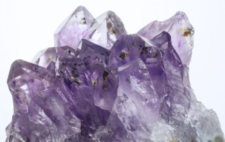

Опубликовано 04.12.2022
Минеральная косметика создана из существующих в природе минералов, вот так все просто.
Самые популярные в ее составе такие: слюда (серицит), диоксид титана, оксид цинка, нитрид бора,
стеарат магния, кварц, оксид хрома и оксиды железа. Подобная косметика чаще всего рассыпчатая,
потому что минералы сухой ингредиент, так что марки, которые не добавляют в косметику ничего,
кроме них — выпускают только рассыпчатые или сухие спрессованные средства. Опять же, из-за лаконичного
состава, такая косметика чаще всего не вызывает реакций и поэтому подходит людям с чувствительной и
реактивной кожей. В жидкой же минеральной косметике аллергикам состав проверять придется, чтобы узнать,
в чем минералы растворены.
Из других плюсов: минеральная косметика обычно отдает на кожу нежный и натуральный цвет, отлично тушуется
и легко очищается с кожи во время умывания. Ниже собрали пять марок, которые подобную косметику и производят.
Бренд Kristall Minerals был создан в 2015 году в Магнитогорске. Это гипоаллергенная косметика со 100% минеральным
составом. В косметике Kristall Minerals не используются синтетические красители, тальк, оксихлорид висмута,
консерванты, парабены. Наш отдел красоты давно любит этот бренд и особенно рекомендует их бронзер — скульптурирует
отлично и деликатно! .
Бренд с собственным производством в Челябинске продается в России уже более трех лет. Все продукты не
тестируются на животных, а состав крайне лаконичен. Особенно отметим минеральные глиттеры, состоящие
только из слюды — сияют как снег под светом гирлянд
Бренд Physicians Formula был основан в 1937 году аллергологом Фрэнком Крэндаллом, который создал
гипоаллергенные продукты для жены, страдающей кожным заболеванием. Вся косметика марки проходит
множество дерматологических тестирований и косметика безопасна даже для чувствительных глаз, что будет
особенно актуально для людей, использующих линзы. Абсолютный хит — сияющий бронзер.
Косметика экологичного бренда минеральной косметики Anaminerals разрабатывается в Италии, а производится в России.
Продукты подходят для всех типов кожи, не тестируются на животных. Помимо этого, бренд направляет часть средств от
продаж в приюты. Очень поддерживаем. Все продукты мультифункциональные, например, финишная пудра может подойти в
качестве сухого шампуня (что? да!), а смочив кисть тоником и набрав на него сухую основу под макияж, можно получить
тональный крем. Классный способ уменьшить количество баночек на полке!
Небольшой бренд косметики «Самосвет» с производством и лабораторией разработок в Петербурге открылся в 2016 году.
В производстве продуктов используются чистые компоненты с легкими текстурами. А за основу названий косметики были взяты петербургские топонимы
(«Цветы Летнего сада», «Сакура на Литейном», «Кресла Александринки»). Очень романтично!